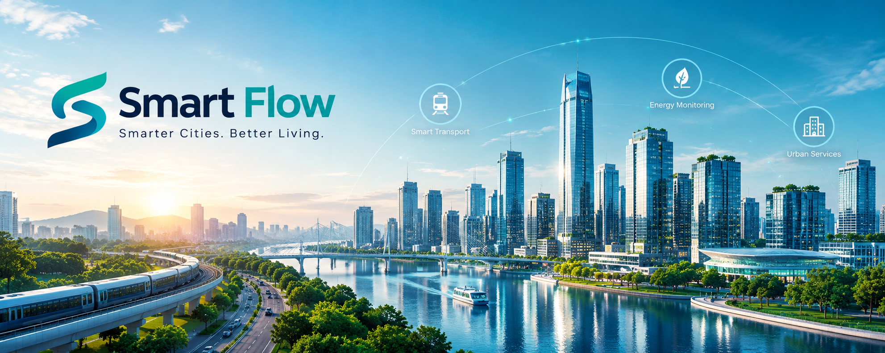

Smart transport
Connected tools that make transport information easier to understand and use.
SMART CITY INFRASTRUCTURE
We connect the systems that help cities move, use energy wisely and deliver better everyday services to their communities.
WHAT WE DO
Our work brings technology and practical city planning together, helping councils make better-informed decisions and improve urban experiences.
Connected tools that make transport information easier to understand and use.
Clearer energy insights to support efficient, responsible infrastructure.
Digital services that help communities and local teams work better together.
DESIGNED AROUND PEOPLE
From transport networks to energy data, Smart-flow focuses on making complex systems feel simple, useful and accessible.

BUILD WHAT COMES NEXT
Explore our open roles and discover how your skills can help shape better city experiences.
QUICK SEARCH
OUR APPROACH
| Solution | Our impact | |
|---|---|---|
| Focus | Expected benefit | |
| Smart transport | Connected transport and traffic data | More efficient journeys |
| Energy monitoring | Energy use and resource tracking | Reduced waste and better resource use |
| Urban services | Digital infrastructure systems | Improved public services |
RESPECT FOR COUNTRY
Smart-flow acknowledges the Wurundjeri People of the Kulin Nation as the Traditional Owners of the land on which our Melbourne team works. We pay our respects to their Elders past and present, and to all Aboriginal and Torres Strait Islander peoples.
We include this because the cities we help to design and connect are built on First Nations land. We aim to build infrastructure that serves every community fairly, and we encourage applications from Aboriginal and Torres Strait Islander peoples for the roles on our careers page.